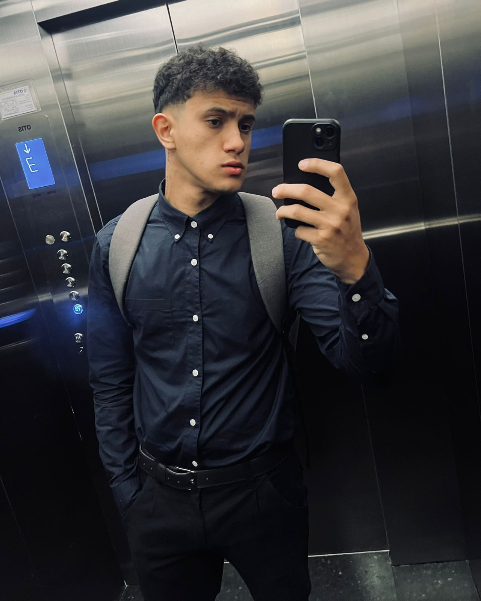
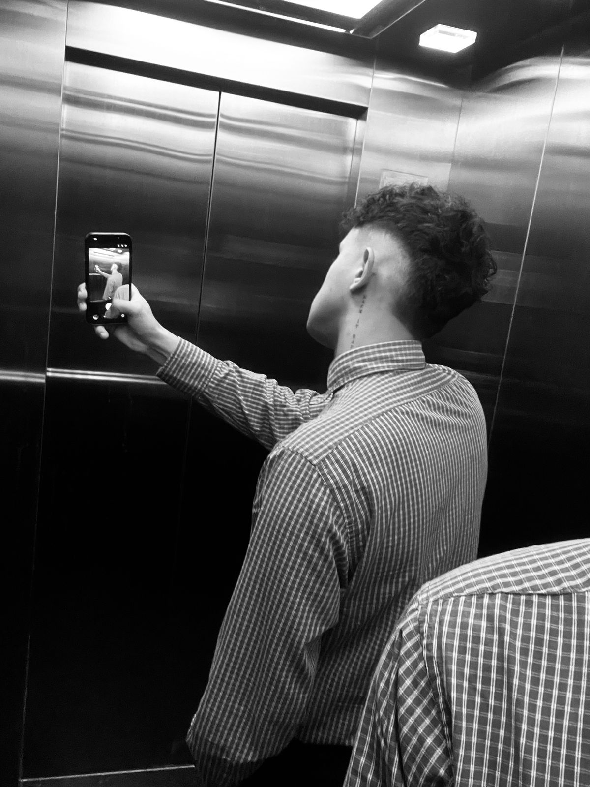

Hola, Soy Rodrigo Molinas, tengo 21 años y soy un estudiante de informática, me gusta programar
y aprender nuevas tecnologías, en mi tiempo libre disfruto de jugar videojuegos y pasar tiempo con mis
amigos, estoy emocionado por compartir mis proyectos y conocimientos a través de esta página web.
Estudio Analisis de Sistemas Informaticos en la Universidad Tecnologica Internacional-Utic,
este es mi primer año de carrera y estoy muy emocionado por lo que estoy aprendiendo dia tras dia.
espero poder seguir aprendiendo y ser algun dia un gran profesional en el campo de la informatica.

